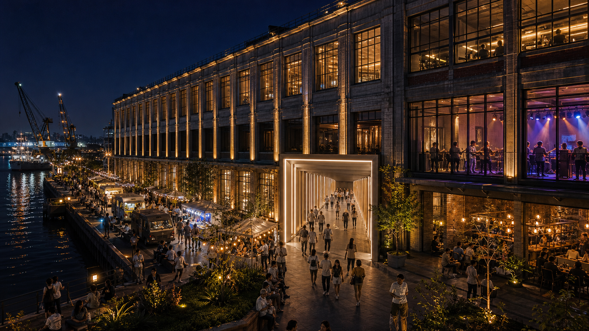

인천 상상플랫폼을
매주 작동하게
만드는 전략.
관객 보유 IP로 목적 방문을 만들고, 권역형 상설 방문지로 키운다.
상상플랫폼은 더 설명할 공간이 아니라, 매주 작동하게 만들어야 할 공공자산입니다. 1,002억 원 규모 공공자산에 관객, 운영자, 행사 IP, 브랜드 예산, 재방문 데이터를 순서대로 붙입니다.
상상플랫폼은 지금 성수처럼 그냥 들르는 곳이 아니라, 목적이 있어야 움직이는 베뉴입니다.
목적성이 분명한 관객 보유 IP로 첫 방문을 만들고, 반복 방문으로 키워야 합니다.
첫 6개월은 수익보다 목적 방문이 반복된다는 증거를 만드는 기간입니다.
상상플랫폼의 진짜 문제.
공간이 실패한 것이 아니라, 수요 엔진 없이 대형 공간을 먼저 연 구조가 막힌 것입니다.
상상플랫폼은 인천 내항의 곡물창고를 리모델링한 약 1,002억 원 규모의 공공자산입니다. 문제는 공간의 크기나 건물의 상징성이 아니라, 이 공간을 매주 채울 관객·행사·운영자·세일즈 조직이 함께 준비되지 않았다는 점입니다.
| 관찰된 현상 | 회의장에서의 해석 |
|---|---|
| 자연 유동이 약한 입지 | 성수처럼 우연히 들르는 방식이 아니라, 먼저 목적 방문을 만들고 반복 방문으로 전환해야 합니다. |
| 대형 앵커 테넌트 철수 | 방문 수요가 검증되기 전에 고정비를 민간에 넘긴 구조입니다. |
| 핵심 공간 공모 유찰 | 민간이 공간이 아니라 모객 리스크를 거부한 것입니다. |
| 행사 때만 방문객 증가 | 건물보다 구체적 방문 이유가 사람을 움직입니다. |
| 야시장 성과 | 상상플랫폼은 죽은 공간이 아니라 편성되면 작동하는 베뉴입니다. |
근거와 운영 기준
상상플랫폼은 2024년 7월 개관 이후 원도심 활성화와 제물포 르네상스의 핵심 거점으로 기대를 받았습니다. 그러나 목표 대비 방문객은 낮았고, LG헬로비전은 운영을 중단했으며, 1~2층 핵심 공간에 대한 민간 공모도 응모 없이 끝났습니다.
이 흐름은 단순한 인지도 부족으로 보기 어렵습니다. 민간 사업자가 부담해야 하는 것은 임대료 하나가 아니라 설치비, 인건비, 홍보비, 운영비, 안전관리비, 모객 실패 리스크 전체입니다. 따라서 과제를 "더 알리는 일"로만 잡으면 다시 같은 벽에 부딪힙니다. 과제를 "수요 조달 구조"로 잡아야 합니다.
기존 방식은 시장이 거부했습니다.
민간이 거부한 것은 상상플랫폼이 아니라, 큰 공간을 통째로 떠안는 방식입니다.
임대료를 낮추고 매출연동 구조를 제시해도 민간이 들어오지 않았다는 점이 중요합니다. 이것은 가격만의 문제가 아니라, 실패 비용을 민간이 전부 떠안는 방식이 시장에서 받아들여지지 않았다는 신호입니다.
| 기존 인식 | 전환해야 할 인식 |
|---|---|
| 상상플랫폼 입점 사업자 모집 | 6개월 시즌 편성·집객·B2B 유치 운영사 모집 |
| 장기 임대와 임대료 회수 | 6개월 파일럿과 방문·매출 데이터 확보 |
| 공간을 맡길 사업자 | 관객 보유 IP를 데려올 운영 주체 |
| 공실 해소 | 월 행사 수, 방문자 수, B2B 유치, 재방문 DB 확보 |
근거와 운영 기준
대형 공간은 카페 몇 개, 전시 몇 개, 마켓 몇 개로 채워지지 않습니다. 매주 행사, 브랜드, 셀러, 커뮤니티, 관객, 운영자가 돌아가야 합니다.
민간이 원하는 제안은 "싸게 빌려드립니다"가 아닙니다. 더 정확히는 "공간, 기본 운영, 공동 홍보, 초기 손실 방어를 같이 제공할 테니 당신의 콘텐츠와 관객을 가져오십시오"입니다. 이 문장으로 제안 구조가 바뀌어야 합니다.
갈 이유가 있을 때만 공간은 작동했습니다.
사람들은 상상플랫폼이라는 이름보다, 먹을 것·볼 것·할 것이 있는 행사에 반응했습니다.
상상플랫폼은 완전히 죽은 공간이 아닙니다. 특정 콘텐츠가 있을 때는 사람이 모였습니다. 이 성공 신호를 단발 행사로 소비하지 말고, 반복 가능한 시간표로 바꾸는 것이 핵심입니다.
BYD 전기차 체험·키즈·마술쇼·전통놀이
명확한 체험 목적이 있으면 가족 방문이 가능합니다.
1883 상상플랫폼 야시장
먹거리·야간 분위기·광장이 결합하면 대규모 집객이 가능합니다.
쿠폰 사용과 주변 상권 활기
상상플랫폼 방문은 개항장·신포시장·차이나타운·월미도와 연결될 수 있습니다.
사진과 영상 확산
콘텐츠 장면이 확산과 재방문 이유를 만듭니다.
1883 상상플랫폼 야시장 5일간 방문객 (추정)
인천e지 쿠폰 사용 평소 대비 크게 증가
근거와 운영 기준
1883 상상플랫폼 야시장은 5일간 약 12만 명을 모았고, 인천e지 쿠폰 사용도 평소 대비 크게 늘어난 것으로 정리돼 있습니다. 이 수치는 단순한 행사 성과가 아니라 "상상플랫폼에 갈 이유가 있으면 사람들이 온다"는 증거입니다.
다만 야시장만 반복하면 이벤트성으로 끝날 수 있습니다. 야시장을 출발점으로 삼되, 낮·저녁·밤의 시간표와 실내·광장·권역 동선을 함께 설계해야 반복 방문이 생깁니다.
목표를 다시 잡아야 합니다.
처음에는 목적형 베뉴로 시작하고, 최종적으로는 계속 오는 권역형 방문지로 키워야 합니다.
처음부터 매일 사람이 오는 상설 명소를 만들겠다는 목표는 지금 단계에서 너무 큽니다. 그렇다고 몇 년 동안 행사장으로만 운영하자는 뜻도 아닙니다. 순서는 목적 방문 → 반복 방문 → 권역형 상설 방문입니다.
목적형 베뉴
키즈·푸드·펫·K-content·270m 워크스루처럼 일부러 갈 이유를 만듭니다.
반복형 시즌 공간
검증된 IP를 정례화하고, 팝업을 단기 입점과 크리에이터 빌리지로 키웁니다.
권역형 상설 방문지
내항 재개발·1883 개항광장·개항장·월미도·차이나타운과 연결되어 자연스럽게 들르는 문화 앵커가 됩니다.
근거와 운영 기준
"상설화"는 최종 목표일 수 있지만, 시작점이 되면 위험합니다. 방문 수요가 검증되지 않은 상태에서 장기 입점과 고정 임대를 먼저 요구하면 민간은 다시 들어오기 어렵습니다.
순서는 명확해야 합니다. 먼저 목적 방문을 만들고, 다음으로 반복되는 시간표를 만들고, 마지막으로 내항 권역 안에서 자연스럽게 들르는 상설 방문지로 키워야 합니다.
공간 임대 → 시즌 편성으로.
상상플랫폼에는 임대사업자가 아니라 방송국 편성국 같은 운영 체계가 필요합니다.
매주 무엇을 열고, 누가 관객을 데려오고, 어떤 브랜드가 비용을 내고, 어떤 커뮤니티가 확산시키는지를 설계해야 합니다. 운영의 중심은 시설 관리가 아니라 시즌 편성입니다.
| 운영 항목 | 해야 할 일 |
|---|---|
| 6개월 편성표 | 키즈, 푸드, 펫, K-content, 브랜드 팝업, 야간 프로그램을 월별로 배치합니다. |
| 행사 IP 섭외 | 이미 관객을 가진 운영사와 커뮤니티를 계약합니다. |
| B2B 세일즈 | 브랜드, 대행사, 공공기관, 학교, 교육기관에 공간 활용 패키지를 직접 제안합니다. |
| 현장 운영 | 안전, 동선, 주차, 부스, 결제, CS를 통합 관리합니다. |
| 데이터 관리 | 방문자, 매출, 체류, 민원, 재방문 의향을 다음 제안서로 바꿉니다. |
근거와 운영 기준
관광공사가 모든 콘텐츠를 직접 만들 필요는 없습니다. 관광공사는 공공성·안전·시설 기준·행정 조율을 맡고, 민간 운영 주체는 편성·섭외·세일즈·마케팅·현장 운영을 맡는 구조가 적합합니다.
운영 주체에게는 편성권, 섭외권, 브랜드 패키지 판매권, 행사별 마케팅 집행권이 있어야 합니다. 권한 없는 운영사는 현장을 바꾸지 못합니다.
관객을 가진 IP
를 데려옵니다.
상상플랫폼이 사람을 모으는 것이 아니라, 관객 보유 IP가 상상플랫폼으로 들어오게 해야 합니다.
지금은 "아이와 갈 이유", "반려동물과 갈 이유", "먹을 이유", "찍을 이유", "팬덤이 모일 이유"처럼 방문 목적이 먼저 보여야 움직이는 공간입니다. 여기서 말하는 IP는 행사, 브랜드, 커뮤니티, 콘텐츠 패키지를 모두 포함합니다.
| 관객 보유 IP | 가져오는 것 | 상상플랫폼이 제공할 것 |
|---|---|---|
| 키즈 체험 운영사 | 가족 단위 주말 방문 | 실내 공간, 안전, 공동 홍보, 최소 매출 방어 |
| 펫 행사 운영사 | 커뮤니티 기반 방문 | 야외 동선, 포토존, 셀러존, 주차·위생 지원 |
| 푸드마켓 운영사 | 셀러, 먹거리, 현장 활기 | 광장, 전기·수도, 부스, 결제·정산 인프라 |
| 자동차·아웃도어 브랜드 | 체험 예산과 신제품 | 대형 실내외 체험 면적, 촬영·PR 패키지 |
| K-content·팬덤 커뮤니티 | 자발 확산과 숏폼 | 무대, 음향, 굿즈마켓, SNS 확산 장치 |
| 로컬 인플루언서 | 지역 도달 | 촬영 포인트, 초대권, 제휴 혜택 |
| 학교·교육청·기관 | 평일 단체 수요 | 체험 프로그램, 안전 동선, 교육형 패키지 |
근거와 운영 기준
공간명 중심 안내는 "상상플랫폼에 놀러오세요"에 머물기 쉽습니다. 콘텐츠 중심 안내는 "이번 주말 인천항 창고에서 키즈 실내 체험, 푸드마켓, 공연, 포토존이 함께 열립니다"처럼 방문 이유를 먼저 보여줍니다.
상상플랫폼 브랜드를 먼저 키우려 하면 시간이 오래 걸립니다. 반대로 관객 보유 IP를 데려오면, 그 관객이 상상플랫폼을 경험하고 다음 방문의 기반이 됩니다.
민간이 들어올 조건을 먼저 만듭니다.
초기 예산은 수익을 사는 돈이 아니라, 민간이 들어올 수 있는 증거를 만드는 돈입니다.
첫 3~6개월은 시장 조성 구간입니다. 이 시기에는 민간이 들어와도 망하지 않게 공간·운영·홍보·손실 방어를 일부 제공해야 합니다.
공간 무상/저가 제공
행사사와 브랜드의 진입장벽을 낮춥니다.
최소 매출 보장 / 손실 방어
운영자가 첫 회차 실패를 두려워하지 않게 합니다.
공동 홍보비
모객 부담을 공공과 민간이 나눕니다.
현장 운영 지원
안전·부스·동선·결제·CS 부담을 낮춥니다.
콘텐츠 제작비
사진·숏폼·보도자료·다음 세일즈 자료를 확보합니다.
파일럿 구조 + 졸업 조건
2주 팝업 → 3~6개월 단기 입점 → 1년 상설 입점. 공개모집·기간 제한·성과 기준으로 특혜가 아닌 시장 검증 장치가 됩니다.
근거와 운영 기준
무료나 낮은 임대료는 특혜가 아니라 파일럿 구조로 설계해야 합니다. 공개모집, 기간 제한, 성과 기준, 졸업 조건을 명확히 두면 낮은 진입장벽은 시장 검증 장치가 됩니다.
권장 구조는 2주 팝업, 3~6개월 단기 입점, 1년 이상 상설 입점입니다. 방문객·매출·운영평가·민원·재참여 의향을 기준으로 다음 단계 진입을 결정합니다.
운영 PMO는 무대감독이어야 합니다.
콘텐츠를 전부 직접 만드는 제작자가 아니라, 외부 IP가 성공하도록 판을 짜는 무대감독.
| 역할 | 책임 | 효과 |
|---|---|---|
| 큐레이션 | 개항·항만·로컬·가족·야간 체류 기준 유지 | 잡다한 행사장화를 막습니다. |
| 인프라 | 조명·음향·가변 부스·QR·예약·안전 동선 제공 | 외부 기획자의 진입장벽을 낮춥니다. |
| 유통 | SNS·인천e지·개항장·월미도·차이나타운 동선 연결 | 관객 공급을 만듭니다. |
| 세일즈 | 브랜드·대행사·기관에 직접 제안 | B2B 수익화를 만듭니다. |
| 데이터 | 방문·매출·민원·체류시간 측정 | 다음 투자 판단의 근거를 만듭니다. |
근거와 운영 기준
관광공사가 전부 직접 기획하면 속도가 느려질 수 있고, 민간에 전부 넘기면 공공성과 안전 관리가 약해질 수 있습니다. 그래서 역할 분리가 필요합니다.
관광공사는 공공성·안전·시설 기준·행정 조율을 맡습니다. 운영 PMO는 6개월 편성표·콘텐츠 섭외·B2B 세일즈·행사별 마케팅·현장 운영을 맡습니다.
첫 6개월은 증거를 만드는 기간입니다.
목표는 "돈을 벌었다"가 아니라 "반복 가능한 운영 모델이 보인다"여야 합니다.
| 시기 | 실행 | 검증 지표 |
|---|---|---|
| 즉시 | 앵커 행사 IP 4개 후보 계약 협상 | 계약 수, 조건, 예상 관객 |
| 즉시 | 야시장·마켓 정례화 | 방문객, 매출, 민원 |
| 1개월 | 포토 트리거 5개 지점 설치 | 촬영률, 공유율, 동선 반응 |
| 1개월 | QR 맵·스탬프·예약 테스트 | 사용률, 재방문 데이터 |
| 3개월 | 270m 워크스루 프리뷰 운영 | 체류시간, 전환율, 촬영률 |
| 3개월 | 1883 항만 나이트 파일럿 | 야간 체류, 소음 민원, F&B 매출 |
| 6개월 | 팝업 입점 1차 공모 | 지원자 수, 재참여율, 매출연동 가능성 |
| 6개월 | B2B 세일즈덱 업데이트 | 브랜드 문의, 제안 수락률 |
근거와 운영 기준
첫 6개월 KPI는 방문객 숫자 하나로 보면 안 됩니다. 행사별 매출·부스 재참여율·방문자 DB·SNS 확산·민원 건수·다음 B2B 문의까지 같이 봐야 합니다.
그래야 단발 이벤트인지, 반복 가능한 운영 모델인지 구분할 수 있습니다.

270m
개항 워크스루.
첫 방문 목적 → 계절별 재방문 장치 → 내항 권역 동선으로 확장.
상상플랫폼은 270m 길이의 곡물창고라는 강한 물리적 자산을 갖고 있습니다. 단순 미디어 전시로 쓰면 방어 부담이 커지지만, 개항·항만·곡물창고·미래 내항을 걷는 경험으로 만들면 초기에는 첫 방문 목적, 중기에는 계절별 재방문 장치, 장기에는 권역을 걷는 대표 동선이 됩니다.
| 단계 | 역할 | 설명 |
|---|---|---|
| 초기 | 첫 방문 목적 | "상상플랫폼에 가면 반드시 이것을 본다"는 기억 포인트입니다. |
| 초기 | 행사 보강 장치 | 키즈·펫·푸드·K-content·브랜드 팝업에 붙는 체험 동선입니다. |
| 중기 | 계절별 재방문 장치 | 봄·여름·가을·겨울 테마를 바꾸며 다시 올 이유를 만듭니다. |
| 중기 | B2B 세일즈 배경 | 브랜드 촬영·체험·쇼케이스를 만들 수 있는 공간 배경입니다. |
| 장기 | 권역 경험 동선 | 실내에서 광장·내항·개항장으로 이어지는 대표 보행 동선입니다. |
근거와 운영 기준
처음부터 270m 전체를 구축하면 비용과 실패 반복 질문이 커집니다. 시작은 프리뷰 구간이 맞습니다. 입구·기둥·외벽·광장에 포토 트리거를 만들고, 내부 3개 구간에서 해무·기적·크레인·곡물창고·개항거리·미래 내항을 걷는 경험을 검증합니다.
표현은 "고정형 대형 전시"가 아니라 "270m 창고 동선을 걷는 개항·항만 경험"이 적합합니다. 핵심은 장비가 아니라 동선·체류·촬영·공유·다음 방문 이유입니다.

낮 · 저녁 · 밤,
반복 방문의 시간표.
시간대별 목적이 반복되면, 상상플랫폼은 주말 시간표가 있는 공간이 됩니다.
가족 · 체험
키즈 체험·공예·플리마켓·카페·조용한 워크스루를 주말 루틴으로 만듭니다.
먹거리 · 데이트
야시장·푸드트럭·버스킹·창고 조명을 월 2회 이상 반복합니다.
안전한 야간 체류
실내 중심 소규모 라이브·야간 음악 프로그램·로컬 탭룸을 제한적으로 검증합니다.
근거와 운영 기준 — 야간 운영 3단계
야간 운영은 조심스럽게 설계해야 합니다. 처음부터 늦은 시간의 대규모 야외 프로그램을 만들면 민원과 안전 리스크가 커집니다.
1단계 21시 이전 야시장과 버스킹. 2단계 실내 라이브와 공연 후 체류. 3단계 허가·방음·보안·응급 대응 기준을 갖춘 제한적 야간 프로그램.
공공기관 발표에서는 "야간 음악 프로그램", "소규모 라이브", "야간 체류 콘텐츠"로 설명하는 것이 안전합니다.
B2B 제안은 기다리지 않고 직접.
상상플랫폼은 알려지면 쓰는 공간이 아니라, 활용 장면을 먼저 제안해야 선택되는 베뉴입니다.
공간 소개만으로는 브랜드와 행사사가 움직이지 않습니다. 면적·동선·지원 조건·예상 관객·촬영 장면·홍보 패키지·데이터 리포트를 묶은 제안서로 직접 움직여야 합니다.
| 타깃 | 제안 방식 |
|---|---|
| 브랜드 마케팅팀 | 신제품 체험 팝업, 쇼케이스, 촬영 패키지 제안 |
| 광고·이벤트 대행사 | 대형 베뉴 세일즈덱 발송과 방문 미팅 |
| 키즈·교육 업체 | 방학·주말 실내 체험 패키지 제안 |
| 푸드·마켓 운영자 | 셀러 모집과 공동 홍보 조건 제안 |
| 자동차·아웃도어 브랜드 | 실내외 대형 체험 팝업 제안 |
| 공공기관·학교 | 평일 단체 체험, 안전 동선, 교육형 상품 제안 |
재원은 임대료 하나로 만들 수 없습니다.
초기 재원은 공공 마중물 + 매출쉐어 + 브랜드 스폰서 + B2B 대관을 섞어야 합니다.
공공 마중물 예산
초기 콘텐츠 유치, 운영 리스크 보전, 공동 홍보비.
브랜드 팝업 비용
신제품 체험·쇼케이스·주말 팝업.
행사 IP 매출
입장권·부스비·참가비.
F&B · 마켓 수수료
푸드트럭·로컬 셀러·굿즈 판매.
스폰서십
금융·모빌리티·통신·로컬 기업 협찬.
B2B 대관
기업 행사·공공기관 행사·학교·단체 체험.
근거와 운영 기준
민관 공동투자 구조는 초기 카드가 아닙니다. 지금 단계에서 민간은 "누가 수요를 책임지느냐"를 먼저 묻습니다. 순서는 공공 마중물 6개월 파일럿 → 방문·매출·B2B 데이터 확보 → 성과 기반 민간 파트너 유치 → 이후 장기 투자 구조 검토가 맞습니다.

상상플랫폼 = 항구형 도시공원
콘텐츠 플랫폼.
단독 목적지가 아니라, 내항 재개발 권역에서 자연스럽게 들르는 첫 문화 거점.
| 공간 | 역할 |
|---|---|
| 상상플랫폼 실내 | 전시·팝업·키즈 체험·브랜드 쇼케이스·270m 워크스루 |
| 1883 개항광장 | 야시장·버스킹·푸드마켓·대형 야외 이벤트 |
| 내항 수변·부두 | 항구 산책·야간 경관·포토 동선 |
| 개항장 | 역사·근대건축·카페·도보 관광 |
| 월미도·차이나타운 | 관광 확장 동선과 식음 소비 |

중기에는 운영자를 키워야 합니다.
목적형 행사로 모은 관객을 검증된 운영자·상설 입점·오픈스튜디오로 이어야 반복 방문이 생깁니다.
| 단계 | 기간 | 조건 | 공간 |
|---|---|---|---|
| 팝업 | 2주~1개월 | 무료 또는 낮은 매출쉐어 | 팝업존·광장·가변 부스 |
| 단기 입점 | 3~6개월 | 매출연동 8~12% 수준 검토 | 셀렉트숍·체험존 |
| 상설 입점 | 1년 이상 | 고정+변동 혼합 | 검증된 구역 |
| 체류형 창작 프로그램 | 시즌 단위 | 작업실 중심·오픈스튜디오 결합 | 창작·교육·전시 연계 공간 |
근거와 운영 기준
크리에이터 빌리지는 "예쁜 상점 몇 개"가 아니라 관객을 가진 창작자·브랜드·공예팀·음악팀·식문화팀이 테스트하고 성장하는 구조여야 합니다.
체류형 창작 프로그램은 숙박 기능을 전면에 세우면 인허가·소방·안전·특혜 질문이 커집니다. 따라서 발표에서는 작업실 중심 체류형 창작 프로그램·오픈스튜디오·시즌형 창작 프로그램으로 설명하는 것이 적합합니다.
오늘의
6가지 결정.
모든 장기 계획을 확정할 필요는 없습니다. 다만 6개월 실험이 가능한 조건은 열어야 합니다.
- 016개월 파일럿 승인 — 야시장·앵커 IP·포토 트리거·QR·워크스루 프리뷰. 빠른 검증이 필요합니다.
- 02운영 PMO 선정 — 편성권·섭외권·세일즈권·마케팅 집행권 부여. 실행 속도를 확보해야 합니다.
- 03관객 보유 IP 선계약 — 키즈·푸드·펫·K-content 4개 이상. 집객할 콘텐츠가 먼저 있어야 합니다.
- 04리스크 제거 예산 — 공간·공동 홍보·최소 매출·운영 지원. 민간 진입장벽을 낮춰야 합니다.
- 05입점·임대 유연성 — 팝업·단기 입점·매출연동·졸업 구조. 실험 후 성장 구조가 필요합니다.
- 06대표 경험 지정 — 270m 개항 워크스루 프리뷰. 첫 방문 명분과 B2B 배경을 만들어야 합니다.
의사결정자별 메시지 번역
시장에게는 제물포 르네상스와 내항 재개발의 첫 체감 성과입니다.
시청에게는 재개발 권역의 집객 리스크를 줄이는 선행 투자입니다.
관광공사에게는 대형 위탁이 아니라 6개월 파일럿으로 방문객·매출·민원·공유 데이터를 쌓는 운영 모델입니다.
5가지
실행 패키지.
목적형으로 시작 → 반복형으로 키움 → 장기적 권역형 공간으로.
목적 방문을 만들겠습니다
6개월 파일럿을 열고 키즈·푸드·펫·K-content·270m 워크스루를 선계약·프리뷰로 묶겠습니다. "일부러 갈 이유"가 생깁니다.
반복되는 시간표로 바꾸겠습니다
야시장·마켓·워크스루·야간 음악 프로그램을 낮·저녁·밤 시간표로 정례화하겠습니다. "이번 주말에 또 가는 이유"가 생깁니다.
검증된 운영자를 키우겠습니다
팝업 → 단기 입점 → 상설 입점·크리에이터 빌리지. "계속 바뀌지만 믿고 가는 공간"이 됩니다.
내항 권역과 연결하겠습니다
1883 개항광장·개항장·수변·월미도·차이나타운 동선을 하루 코스로 묶겠습니다.
다음 투자의 근거를 만들겠습니다
방문자·매출·DB·민원·재참여·B2B 문의 데이터를 쌓겠습니다. 2028년 이후 권역형 상설 방문지로 확장할 근거가 생깁니다.
목적 방문으로 시작해 반복 방문을 만들고, 내항 재개발 권역 안에서 계속 오는 상설 방문지로 성장해야 합니다.
270m 개항 워크스루 상세.
첫 방문 목적을 만들고, 계절별 재방문과 권역 동선으로 확장되는 장치.
A-1. 핵심 상품
| 상품 | 경험 | 역할 |
|---|---|---|
| 270m 개항 워크스루 | 해무·기적·크레인·곡물·개항거리·미래 내항으로 이어지는 선형 동선 | "상상플랫폼에 가면 반드시 이것"이라는 첫 방문 명분 |
| 개항 포토 트리거 | 창고 입구·기둥·외벽·광장·야시장 출구 촬영 지점 | 초기 확산을 만드는 UGC 유입 |
| 워크스루 프리뷰 | 야시장 방문객이 10분 안에 경험하는 일부 구간 | 전체 구축 전 반응 검증 |
| 브랜드 쇼케이스 동선 | 자동차·아웃도어·로컬 브랜드 촬영과 체험 | B2B 세일즈 상품화 |
A-2. 단계적 구축
| 단계 | 내용 | 판단 기준 |
|---|---|---|
| 1단계 | 입구·기둥·외벽·광장 포토 트리거 5개 설치 | 촬영률·공유율·체류시간 |
| 2단계 | 내부 3개 프리뷰 구간 운영 | 야시장 전환율·만족도·민원 |
| 3단계 | 야시장·브랜드 팝업과 패키지화 | 브랜드 문의·B2B 판매 가능성 |
| 4단계 | 성과 확인 후 270m 전체 동선 확장 | 스폰서·민간 투자·운영수익 |
A-3. 표현 원칙
| 피할 표현 | 쓸 표현 |
|---|---|
| 고정형 대형 전시 | 270m 창고 동선을 걷는 개항·항만 경험 |
| 시설투자 중심 사업 | 프리뷰 운영 후 단계 확장 |
| 단독 집객 상품 | 행사·브랜드 팝업을 보강하는 대표 경험 |
| 한 번 보고 끝나는 전시 | 분기별 테마 교체가 가능한 워크스루 플랫폼 |

1883 항만 나이트.
야시장의 성공 신호를 안전한 야간 체류 상품으로 바꾸는 프로그램.
| 구분 | 내용 |
|---|---|
| 기본 콘셉트 | 금·토 저녁, 워크스루 프리뷰 + 야시장 + 소규모 라이브 + 로컬 F&B 연결 |
| 운영 시간 | 1단계는 21시 전후 야외 종료, 이후 실내 중심 검토 |
| 장소 | 1883 개항광장·창고 내부 일부·실내 라이브 구역 |
| 수익 | F&B 수수료·브랜드 협찬·티켓형 프로그램·B2B 초청 행사 |
| 관리 | 데시벨 기준·보안 인력·미성년자 관리·응급 대응·민원 창구 |
크리에이터 빌리지와 체류형 창작 프로그램.
상상플랫폼의 2년 차 확장 모델.
| 장르 | 운영 방식 | 기대 효과 |
|---|---|---|
| 팝아트·그래픽 | 시즌 전시·굿즈마켓·라이브 페인팅 | 촬영과 판매가 동시에 발생합니다. |
| 음악 | 소규모 라이브·커버댄스·팬덤 행사 | 젊은 층 방문과 야간 체류를 만듭니다. |
| 공예·디자인 | 워크숍·클래스·마켓 | 가족·관광객 체험 수요를 만듭니다. |
| 식문화 | 로컬 푸드·탭룸·푸드마켓 | 야시장과 평일 소비를 연결합니다. |
| 미디어·영상 | 워크스루 테마 제작·숏폼 촬영 | 공간 자체의 확산 장면을 만듭니다. |
체류형 창작 프로그램의 표현
숙박 기능보다 작업실·오픈스튜디오·시민 공개 프로그램을 중심으로 설계합니다. 숙박은 별도 인허가와 안전 기준 검토 이후 단계로 둡니다.
재원과 민간투자 구조.
장기 투자 구조는 성과 검증 이후에 검토해야 합니다.
SPC/JV를 처음부터 전면에 세우면 민간은 수요 책임을 먼저 묻습니다. 따라서 운영 성과와 현금흐름이 어느 정도 확인된 뒤 민관 공동투자 구조를 검토하는 것이 맞습니다.
- 01공공 마중물 예산 — 공간 제공·운영비 일부·앵커 행사 유치·공동 홍보
- 02매출쉐어와 행사 매출 — 부스비·입장권·F&B·굿즈 판매
- 03브랜드 스폰서와 B2B 대관 — 신제품 체험·기업행사·공공기관 행사
- 04성과 기반 민간 파트너 유치 — 정례 팝업·시즌 스폰서·고정 운영사
- 05SPC/JV 등 장기 민관 공동투자 구조 검토 — 검증된 수익과 운영 데이터를 기반으로 확장
해외 벤치마킹.
공통점은 "사람들이 쓸 이유와 운영 주체를 먼저 만들었다"는 점입니다.
| 사례 | 위치 | 가져올 점 | 상상플랫폼 적용 |
|---|---|---|---|
| Granville Island | 밴쿠버 | 정부 소유 공간에 민간 운영·시장·예술·식문화 결합 | 공공자산을 민간 편성과 상업 수익으로 살리는 모델 |
| HafenCity | 함부르크 | 항만 재개발을 장기 권역 서사로 구축 | 내항 1·8부두 재개발과 상상플랫폼을 권역으로 설명 |
| Tate Modern | 런던 | 산업시설 재생과 강변 동선의 결합 | 창고형 공간을 도시 산책·문화 방문의 목적지로 |
| TIRPITZ | 덴마크 | 역사 공간과 선형 동선의 몰입 경험 | 270m 창고 동선을 개항·항만 경험으로 |
| Wynwood | 마이애미 | 폐창고 지역을 스트리트아트·이벤트로 재생 | 촬영·공유가 되는 로컬·브랜드 팝업 구역 |
| La Villette | 파리 | 공원·전시·음악·야외의 복합 운영 | 1883 개항광장과 실내 공간의 도시공원형 운영 |
| V&A Friday Lates | 런던 | 박물관 야간 프로그램으로 새 고객층 유치 | 야간 음악 프로그램·소규모 라이브의 공공형 운영 |
| The Met Date Night | 뉴욕 | 야간 관람·공연·체류 결합 | 저녁 이후 체류형 프로그램의 안전한 표현 |
| Meow Wolf | 미국 | 몰입형 경험·촬영·재방문 장치 결합 | 워크스루 포토 트리거와 분기별 테마 교체 참고 |
예상 질문 답변.
Q1. 왜 기존 공모가 유찰됐습니까?
민간이 상상플랫폼 자체를 거부한 것이 아니라, 큰 공간을 고정비와 모객 리스크까지 떠안는 방식으로 맡는 것을 거부한 것입니다. 통임대가 아니라 시즌 편성·팝업·매출연동·단계 성장 구조로 바꿔야 합니다.
Q2. 민간이 정말 들어옵니까?
그냥 들어오라고 하면 어렵습니다. 그러나 공간·운영 지원·공동 홍보·최소 매출 방어·사진영상 자료화·다음 회차 세일즈 연결까지 제공하면 들어올 가능성이 커집니다.
Q3. 270m 워크스루가 또 전시 실패를 반복하는 것 아닙니까?
단독 전시가 아니라 행사 IP·브랜드 팝업의 체험가치를 높이는 대표 경험입니다. 처음부터 전체 구축하지 않고 프리뷰 구간으로 체류시간·촬영률·전환율을 검증해야 합니다.
Q4. 추가 예산이 많이 필요한 것 아닙니까?
처음부터 큰 시설투자를 하자는 것이 아닙니다. 초기에는 민간이 들어올 수 있는 조건을 만드는 마중물 예산이 필요합니다. 이 돈은 수익을 바로 사는 돈이 아니라 방문자·매출·B2B 레퍼런스를 만드는 돈입니다.
Q5. 무료/낮은 임대료는 특혜 논란이 있지 않습니까?
공개모집·기간 제한·성과 기준·졸업 조건을 명확히 하면 특혜가 아니라 파일럿 운영입니다. 2주 팝업·3~6개월 단기 입점·1년 상설 입점으로 단계를 나누고 성과 기준으로 결정합니다.
Q6. 야간 운영은 부담스럽지 않습니까?
처음부터 늦은 시간의 대규모 야외 프로그램을 운영하자는 것이 아닙니다. 1단계는 21시 이전 야시장과 버스킹, 2단계는 실내 소규모 라이브, 3단계는 허가·방음 기준을 갖춘 제한적 야간 프로그램입니다.
Q7. 내항 재개발과 왜 묶어야 합니까?
상상플랫폼을 단독 시설로 보면 부담이 큽니다. 그러나 내항 재개발 권역의 첫 문화 거점으로 보면 이미 만들어진 공공자산이 권역 방문의 출발점이 됩니다. 지금부터 사람이 오는 시간표를 만들어야 향후 재개발 권역의 유동인구를 흡수할 수 있습니다.
Q8. 오늘 이 자리에서 결정할 것은 무엇입니까?
6개월 파일럿 승인·운영 PMO 권한·관객 보유 IP 선계약·입점·임대 유연성·초기 리스크 제거 예산·270m 워크스루 프리뷰 지정입니다.